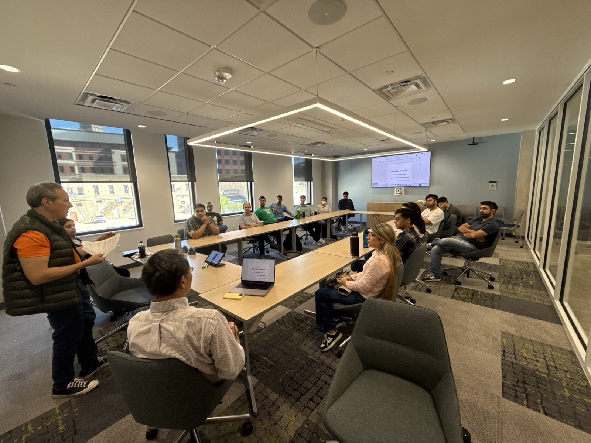
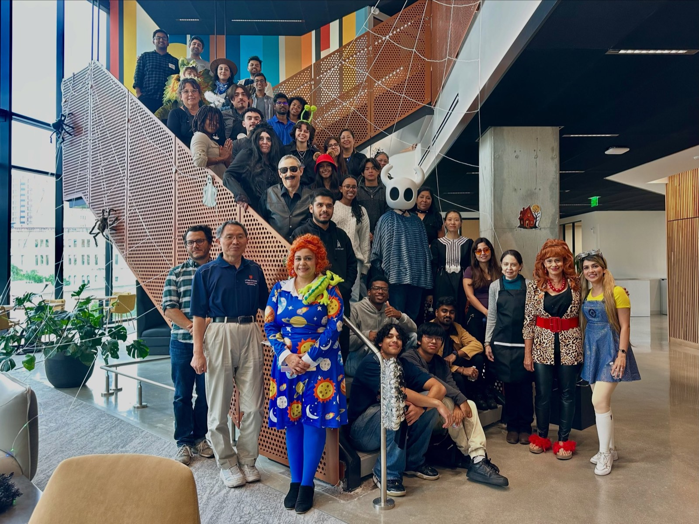
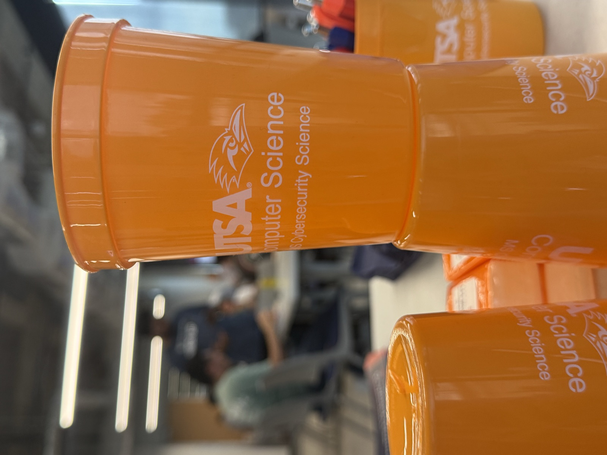

Events
What's coming up next, and a look back at what we've been up to.
Upcoming Events
Nothing scheduled right now — check back soon, or follow our calendar for updates.
Past Events
Highlights from past CSGRAD gatherings.
-

PhD Town Hall
A forum with Dr. Fred Martin and Dr. Dakai Zhu where PhD students shared concerns, asked questions, and heard updates from faculty — a chance to make our voices heard and connect with fellow PhD students.
-

Candy Crawl 2026
Our Halloween celebration! We gathered on the 4th floor of San Pedro II for an afternoon of treats, games, costumes, and prizes — a mid-semester break with the CS Graduate Student Association.
-

Game + Mingling
Our fall kickoff! We gathered CS students and faculty in the San Pedro I for an evening of board games, pizza, and hanging out. Codenames, backgammon, and UNO were on rotation while returning members introduced themselves to first-years and swapped stories about labs, courses, and life in San Antonio. A relaxed way to start the semester and put faces to the names on Discord.
With special appearances from the department chair, Dr. Fred Martin and assistant department chair, Dr. Dakai Zhu.